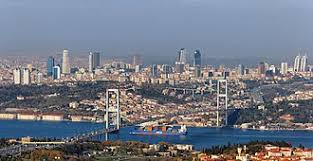
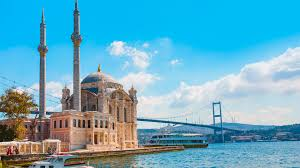
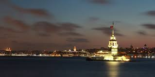

Top 5 Reasons Why İstanbul Is Among the Best Cities
- Its unique location between Europe and Asia.
- The incredible historical landmarks such as Hagia Sophia and Topkapı Palace.
- The diverse and flavorful Turkish cuisine.
- The warm and welcoming local people.
- The lively atmosphere of its markets, neighborhoods, and nightlife.

Other Things You Shouldn’t Miss in İstanbul
- A walk along the Bosphorus.
- Tasting traditional dishes like kebab, meze, and baklava.
- Visiting the Grand Bazaar and Spice Market.
- Watching the sunset from Galata Tower.
- Taking a ferry ride between the two continents.

Learn More About İstanbul:
- Visit İstanbul Official Tourism Site
- Go Türkiye – İstanbul
- UNESCO World Heritage: Historic Areas of İstanbul